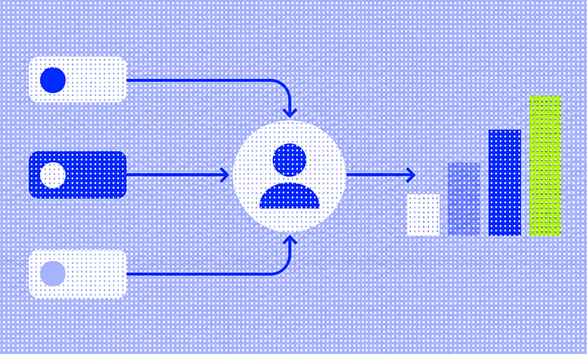
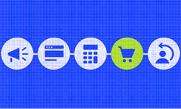
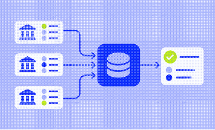
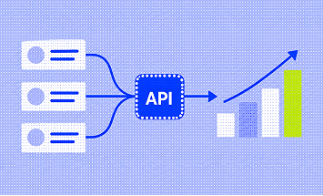
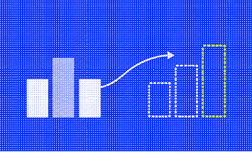

Проблема разрозненных данных
«Сравни» — финансовый маркетплейс, который помогает пользователям выбирать страховые, кредитные и другие финансовые продукты. С ростом компании увеличилось количество продуктов, маркетинговых каналов и пользовательских данных. Разрозненные аналитические инструменты перестали обеспечивать бизнес необходимой информацией.

Как связали маркетинговые и продуктовые метрики
Команда разделила пользовательский путь на пять основных этапов:
Привлечение. Аналитики отслеживали показы, клики, стоимость переходов и рекламные расходы. Это позволяло оценивать эффективность отдельных кампаний и источников трафика.
Взаимодействие. После перехода на сайт фиксировались действия пользователей: просмотры страниц, применение фильтров и перемещения между экранами. На основе событий можно было анализировать пользовательские сценарии и строить воронки.
Конверсия. Команда отслеживала микроконверсии. Например, пользователь мог рассчитать стоимость полиса ОСАГО, но не завершить оформление. Такое действие позволяло выделить аудиторию для последующих коммуникаций.
Удержание. Данные о предыдущих покупках использовались для возвращения клиентов. Например, перед окончанием срока действия полиса ОСАГО сервис мог предложить его продление.


В результате аналитики получили возможность рассматривать действия пользователя как связанные этапы одного процесса, а не как независимые события.
Как определяли эффективность каналов
Одна из задач заключалась в правильном распределении конверсий между рекламными источниками. Пользователь мог впервые перейти на сайт через поисковую рекламу, позднее вернуться из другого канала и завершить покупку после email-рассылки. Чтобы определить вклад рекламных каналов, «Сравни» разработал собственный сервис атрибуции. На момент публикации компания использовала две модели:
First Touch. Конверсия приписывается первому источнику привлечения пользователя.
Last Click. Конверсия приписывается последнему рекламному взаимодействию перед покупкой.
Использование разных моделей помогало оценивать эффективность каналов с нескольких точек зрения. При этом атрибуция распределяла ценность конверсий по определённым правилам, но не доказывала причинное влияние рекламы на покупки.
Как конверсию связали с выручкой
«Сравни» сотрудничает с банками и другими финансовыми организациями на разных условиях. Одни партнёры оплачивают полученную заявку, другие — одобренную, третьи — только выданный кредит.
Для расчёта доходности компания разработала собственный сервис, который через API получал статусы заявок от партнёров и определял фактическую выручку. Такие системы рассчитывали прогнозную выручку, необходимую для ежедневной работы маркетинга.


Эти данные позволяли сопоставлять доход с затратами на привлечение и рассчитывать ROMI. Таким образом, эффективность каналов можно было оценивать по их финансовому результату.
Какие инструменты использовали аналитики
Чтобы объединить информацию из разных источников, компания внедрила единое хранилище данных Snowflake. В него поступали данные рекламных систем, пользовательских событий, CRM и внутренних сервисов. Для каждого направления использовались специализированные инструменты. На момент публикации архитектура включала:
AppMetrica, AppsFlyer и myTracker. Аналитика мобильного приложения и источники трафика.
Google Analytics 360 и Яндекс Метрика. Анализ поведения пользователей на сайте.
Собственная платформа A/B-тестирования. Проверка продуктовых гипотез.
Exponea. Управление CRM-коммуникациями и удержанием.
Power BI. Создание отчётов и дашбордов.
Компания также разделила аналитиков на команды маркетинговой, продуктовой и BI-аналитики, отдельно выделив направление экспериментов и команду работы с данными. Это позволило распределить ответственность за сбор, обработку и анализ информации между специалистами.
Результат
«Сравни» выстроил систему, объединяющую маркетинговые расходы, пользовательское поведение, конверсии, выручку и повторные обращения. По оценке компании, одним из основных результатов стало повышение эффективности работы аналитических команд благодаря распределению зон ответственности. Общая инфраструктура обеспечила возможность строить отчёты на основе данных из разных систем и использовать их для продуктовых и маркетинговых решений.